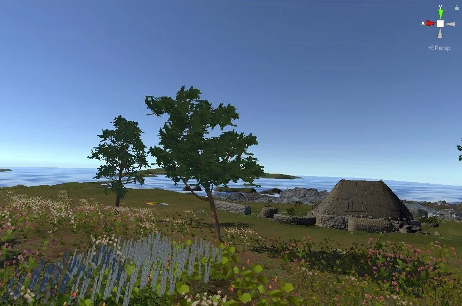

Stage de 6 mois · Unity · Réalité virtuelle & IA
LIRMM — Apprendre en VR avec l’IA
Concevoir et développer un parcours immersif, un atelier de ville durable et un assistant vocal contextualisé.
Découvrir les six mois de projet01 / MODÉLISER · IMAGINER · INTERAGIR
Des expériences immersives aux scènes 3D : mes réalisations, leur contexte et les étapes de leur création.
Stage de 6 mois · Unity · Réalité virtuelle & IA
Concevoir et développer un parcours immersif, un atelier de ville durable et un assistant vocal contextualisé.
Découvrir les six mois de projet
Patrimoine · Environnement 3D · VR
Reconstituer un paysage côtier ancien et le rendre explorable en réalité virtuelle.
Découvrir le projet
Interaction · Python & Unity
Transformer les mouvements des jambes filmés en déplacement dans une scène Unity.
Découvrir le projet
Interaction gestuelle · Python & Unity
Explorer trois façons de se déplacer dans un environnement virtuel avec les gestes des bras et des mains.
Découvrir le projet
Modélisation 3D · Unity
Modéliser un tramway et son environnement, puis le mettre en mouvement dans Unity.
Découvrir le projet